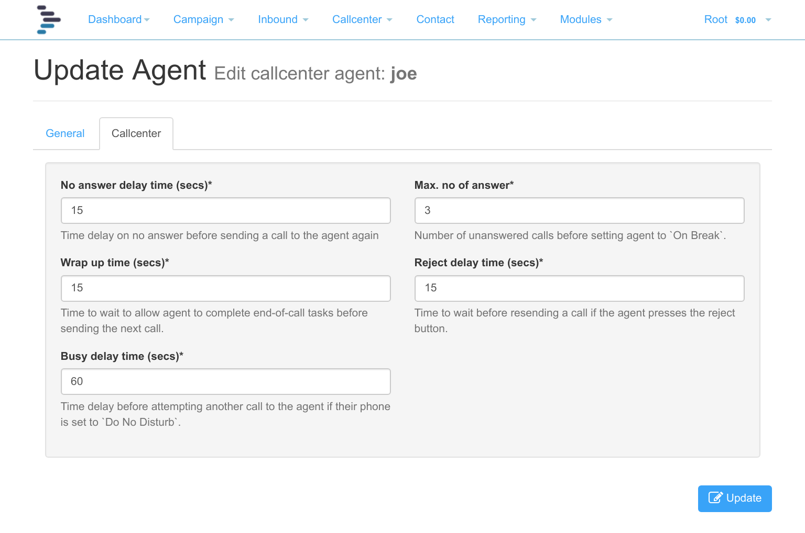
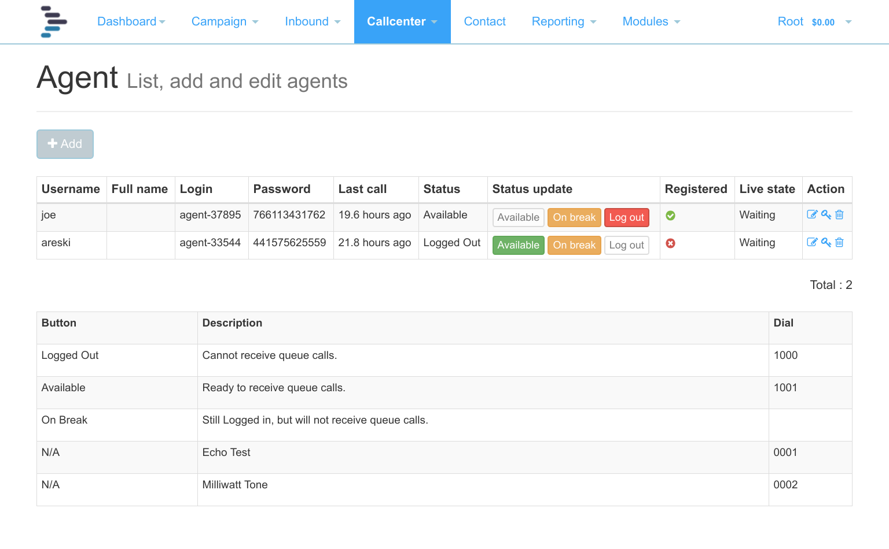
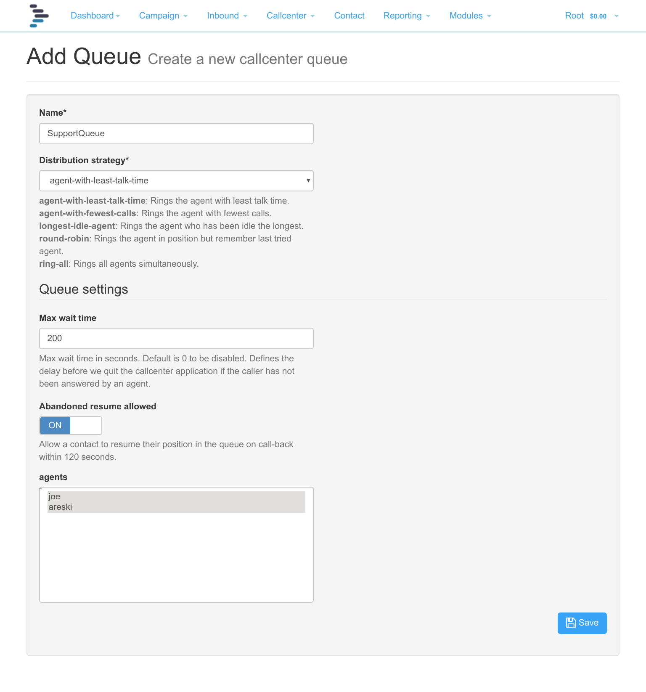
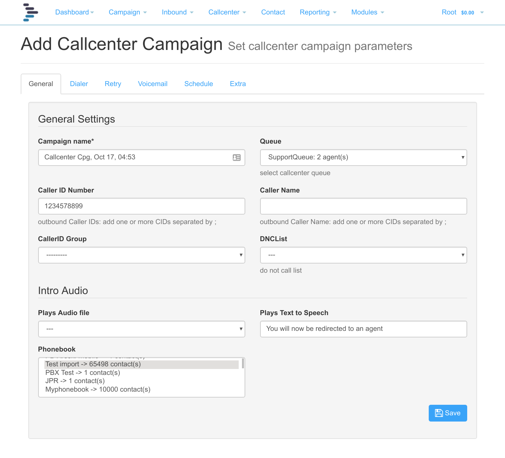
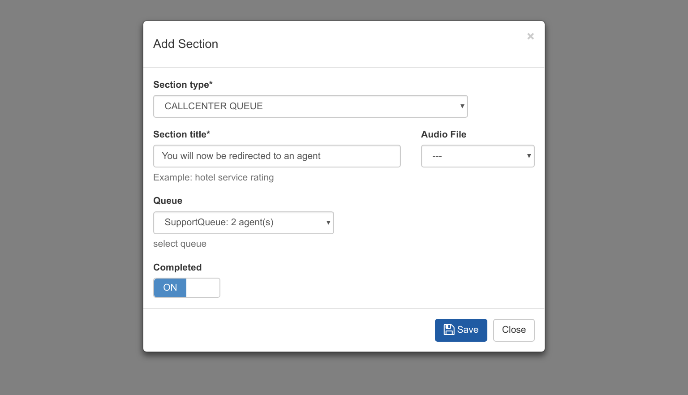

Call-Center¶
1. Overview¶
The call center module is designed for call centers so that agents can answer calls from customers.
The call center module allows you to:
- Add Agents with a SIP username and password
- Answer calls directly from the webpage using RTC
- Optionally connect SIP phones to agent accounts
- Transfer calls to pre-determined destinations
- Make outbound calls
- Create a Queue and add agents to the queue
- Create a call center campaign to make outbound calls.
- Use queues in standard campaigns, surveys and inbound campaigns.
2. Agents¶
An agent is a person who takes calls. A queue is created and agents added to that queue.
An agent account is created by clicking “Callcenter” at the top and selecting agent.
{kind=link}
In the Agent Screen, click add, enter a username, password and password confirmation. Moving onto the next screen, add a first name and last name.
The phone login field is pre-filled and a password is suggested. Passwords should be long and complex
If you intend to use an external SIP phone, then Webphone should be switched off.
Click Update. Your agent is now created and you can move on to configuring their phone where necessary. Normally, the agent will simply log into the agent interface and answer calls on the web page.
You will now be returned to the agent listing.
{kind=link}
- The login and password are used for registering the agent’s SIP phone.
- Last call indicates when the agent last took a call.
- The agent’s status is shown. Values are Logged Out, Available and On Break.
- Status can be changed by clicking the appropriate button in the Status Update field, or by dialing the appropriate short code listed in the Agent Screen.
- Registered will show a green tick when the agent’s SIP phone is correctly registered to the system, and a red cross when it is not.
- Live State shows the current State of the agent, e.g. on a call or waiting.
- Action allows you to edit the agent, change the password and delete the agent.
Editing the Agent¶
After the agent has been created, the agent’s name and SIP password can be edited. Under the callcenter tab, there are further agent specific settings such as wrap-up time. Read the onscreen instructions to understand each of the settings.
Registering a SIP Phone¶
Any SIP phone can be used as an endpoint on the system, these include:
- Hard-phone - a physical SIP phone plugged into your network with access to the Internet. Features to look for in a physical phone for use in a call center would be the ability to connect a headset and to auto-answer a call.
- Soft-phone - a software based phone installed on your computer. There are versions available for PC, Mac and Linux. For best results a microphone and headphones should be connected to your laptop or desktop. There are free softphones available, but it may be necessary to upgrade to the commercial version to enjoy extra features such as auto-answer.
- Cell-Phone App - Soft phones can be installed on cell phones, connecting to The Dialer via wifi. For busy call centers, this is not always satisfactory option, battery life is poor, auto-answer is not available and cell-phones are uncomfortable to hold for a long period of time, but fine for testing and low volumes.
A competent and reliable softphone might be Zoiper at https://www.zoiper.com/ They have a free version, and a pro-version is available which includes auto-answer.
There is a video at [https://www.youtube.com/watch?v=VN16jLJa1iA] explaining how to download and configure Zoiper to your auto-dialer system.
Short Codes¶
Several short codes have been provided for the agent to log into and out of the system as well as do basic tests to check all is working:
- 1000 - log out, the agent will not receive calls.
- 1001 - log in and make yourself available to take calls. Must be done on registration.
- 1002 - Log in on Standby, agent hears music on hold and will be connected immediately to a contact on contact answer.
- 1004 - Log in on Standby as above without music on hold
- 0001 - Echo Test to check two way audio and that microphone and speakers are working correctly.
- 0002 - continuous tone, if the tone is not continuous and it jumps and stutters excessively, then your internet connection may not be of sufficient quality or bandwidth to support a voice call.
3. Transfer List¶
Phone numbers or SIP URI can be added to the Transfer list, these numbers can be made available to the agent to transfer calls to.
There are two types of transfer available to the agent:
- Cold Transfer - Transfers the call to the selected destination and disconnects the agent immediately.
- 3-Way Transfer - Creates a 3 way call between agent, contact and selected destination.
Phone numbers should be entered in full international format with a leading +
4. Call-Center Config¶
Multiple call-center configurations can be created and selected in a call-center Campaign. In a standard Voice Campaign, the default config will be used.
The Call-Center Config allows you to create an agent script and allows tag replacement to be used to include specific information about a contact.
There is integration with most web based CRM systems, where a link can be added along with the customer’s ID uploaded with the contact to automatically open the CRM at the contacts’s record.
The numbers that agents are allowed to transfer to with this call center config are selected here.
5. Agent’s Lead Dispostions¶
The agent can mark each contact with a lead disposition. These are set to: 0=CONNECTED,1=NOT_CONNECTED,2=CALLBACK_LATER,3=WRONG_NUMBER,4=BAD_TIMING
More lead dispositions can be added and edited by the tenant under account settings.
Outbound Calling¶
The agent can manually dial indvidual numbers. Only one call can be maded at a time and total calls are limited to 500 per day for security.
To allow outbound calling, the tenant selects the carrier to use and the callerID number and name to send with each call. Only when this is done can the agent make outbound calls.
6. Queue¶
{kind=link}
A queue groups agents together. Calls are then sent to the queue which in turn, routes the calls to the agents.
From the queue listing screen, add a new queue and give it descriptive name.
- Strategy: You can choose a distribution strategy to evenly spread the calls out over all agents. If you are doing direct transfer with agent’s phone set to auto-answer, then Round Robin would be the best choice, otherwise, simply choose which is best for your queue.
- Max wait time: The Max wait time in seconds is the amount of time for a caller to be left in the queue. 0 is indefinitely. This may be best set to a value to avoid hung calls.
- Abandoned resume: Abandoned resume allowed allows an inbound caller in the queue to resume the same position should they be disconnected and they immediately call back in.
Finally, highlight the agents to be called in this queue then click update.
NB: Ensure that Agents dial 1001 to log into the queue, or click available on the agent listing screen to ensure they take calls.
7. Callcenter Campaign¶
A callcenter campaign is used for power dialling your contacts for your agents for direct transfer or introduced transfer (message followed by transfer)
{kind=link}
The settings are mostly the same as for any campaign:
Tab general settings¶
Set the campaign name, which queue you are sending the calls into, the callerID and DNC list to refer to. Optionally you can play an audio file before transferring the call, such as “We are trying to contact you, please hold while we connect you to an agent”, alternatively, the call can be transferred with no message, in this case, the agent’s phone should be set to auto-answer and the queue set up for “Round Robin” call distribution.
Tab dialer settings¶
Set the carrier, number of concurrent calls, and the number of outbound calls to make per available agent. As agents become occupied, so the number of outbound calls will be reduced.
Tab retry settings¶
Set the number of retries. Setting the max retries to 1 will mean that the initial call will be made followed by one retry, i.e. two calls in total. The time in seconds between retries can be set - it defaults to 300 seconds (5 minutes).
Tab voicemail settings¶
Set whether voicemail detection is off or on. Typically for power dialling, it will be set to on, so that only real people are transferred to agents. Set the detection behavior.
- Always play message: In this case select a voicemail audio file, and/or text to speech. The audio needs to be at least 20 seconds so that the message is long enough to reach the “beep”. On hearing the beep, the message will restart so that the entire message is recorded.
- Play message to Human Only: This setting will drop the call when an answering machine is detected, so no audio file needs to be selected.
- Leave message to voicemail only: This will disconnect if a real person is detected, so is not relevant to a call center campaign and should never be selected in these circumstances.
NB: Although our answering machine detection has been shown to be quite accurate, it is still possible that answering machines could be identified as people, although unlikely that people will be identified as answering machines.
Tab schedule settings¶
Set the times at which you want the outbound calls to be made. The time zone dialling switch will ensure that your contacts are only called between the daily start and stop times according to their own timezone – this feature is only available in North America.
Tab extra settings¶
This covers maximum call durations, ringing time, TTS language and call recordings.
Once the campaign has been been started, the number of contacts to be called will be populated, and the number of concurrent calls and transfers in progress will be shown on screen.
8. Use Queue within an IVR¶
There is a Callcenter Queue section which can be used in the survey as part of the IVR creation. This may be used for skills based routing in conjunction with a Multi-choice section.
For instance, you could have two queues with English speaking agents in one, and Spanish speaking agents in another, then create a multi-choice node: “For English, press 1, for Spanish press 2”, so that a call can be diverted to a queue so the agent can answer the call in the contact’s own language.
{kind=link}
As with any section, text to speech can be added, an audio file selected and the queue selected.
9. Regulating Calls According to Agents available¶
There is a new Dialer Mode in a normal outbound campaign called Callcenter dialer which will regulate the calls according to the number of agents available. When this is selected:
- Set the dial rate to the number of calls you want to make according to the number of agents available. If you have 10 agents and the dial rate is 2, then the system will keep 20 (2x10) calls running until the first agent picks up a call, then 18 calls will be maintained until another agent picks up.
- Max concurrent call is set as a limit. This is to ensure that you do not overwhelm your carrier with calls.
- Set the Frequency Limit; in Simple dialer mode, the frequency is a target for the number of calls to be made per minute, However, in Callcenter mode (and Power Dialer mode), the frequency is a limit which will not be exceeded. Again this is to ensure that you send no more calls than your carrier can handle.
10. Reporting¶
As with any campaign, the following reports are available:
- Dashboard showing overview and progress of a campaign.
- The Callcenter campaign screen shows progress and calls in progress.
- Under reporting, the CDR can be viewed and downloaded.
Additionally under CallCenter the following reports are available:
- Queue Stats showing total calls, abandoned calls, talk time, etc.
- Agent Reports, filtered by agent and date showing stats by agent.
- Agent Activity log of agent actions.